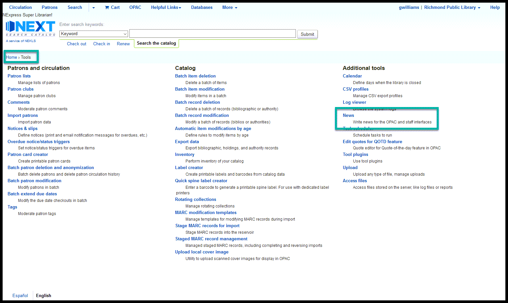

COVID-19 reopening¶
Circulation rules¶
Go to Home > Administration > Circulation and fine rules and choose the library that needs to be reopened from the “Select a library” dropdown

Go to the section of the page titled “Default checkout, hold and return policy for LIBRARYNAME” and follow these steps as needed:
If “Total current checkouts allowed,” “Total current on-site checkouts allowed,” and “Maximum total holds allowed (count)” are empty, go to the “Actions” column and click on “Unset”
If “Total current checkouts allowed,” “Total current on-site checkouts allowed,” and “Maximum total holds allowed (count)” contain any data, edit “Hold policy,” “Hold pickup library match,” and “Return policy” as follows and then click on “Save”
| Field | Set to |
|---|---|
| Hold policy | From any library |
| Hold pickup library match | any library |
| Return policy | Item returns home |

Staff client JS¶
Go to Home > Administration > System preferences and click on the “Staff client” tab

Scroll down to the “IntranetUserJS” preference and click on “Edit with Code Mirror”

Do a browser search for “//COVID19 closures”

Look for a section titled “//BEGIN XLIBRARYX COVID19 closure” where “XLIBRARYX” is the code for the library you are reopening

Delete everything on the lines starting with “//BEGIN …” and ending with “//END” and click “Save all Staff Client preferences”

OPAC JS¶
Go to Home > Administration > System preferences and click on the “OPAC” tab

Scroll down to the “OPACUserJS” preference and click on “Edit with Code Mirror”
Do a browser search for “//COVID19 closures”

Look for a section titled “//BEGIN XLIBRARYX COVID19 closure” where “XLIBRARYX” is the code for the library you are reopening

Delete everything on the lines starting with “//BEGIN …” and ending with “//END” and click “Save all OPAC preferences”
News block¶
Go to Home > Tools and open the “News” Tools
Find the news item titled “COVID-19 Closures and information” and click on “Edit”

Click on the <> icon to edit the raw html of the news Item

Find the lines related to the library you are Reopening
Delete the lines related to the library you are reopening and click on “Save”
Review the changes and, if everything looks good, click on “Submit”
When you return to the home page in the staff client, the updates should appear on the left hand side of the homepage

Suspend unfilled requests¶
If the closing instructions were followed correctly, the suspended requests should un-suspend automatically on the date specified when the closure began.
Due dates¶
If the closing instructions were followed correctly, there shouldn’t need to be any further due date changes.
email¶
An e-mail should be sent to all libraries letting them know that the closed library has reopened and that it’s OK to start shipping materials to them again.